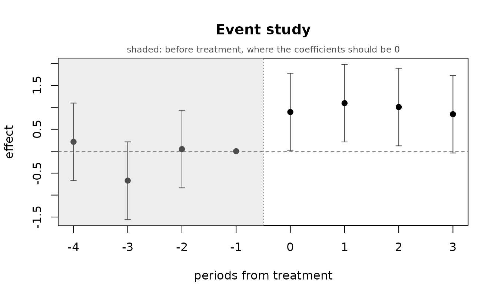
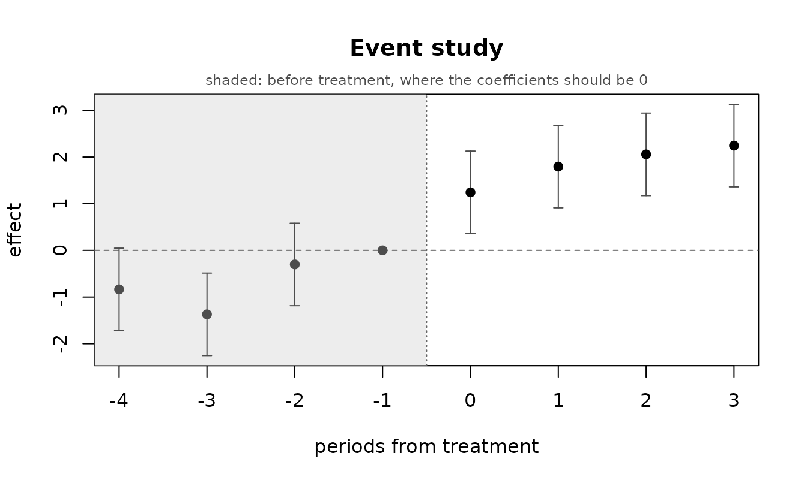
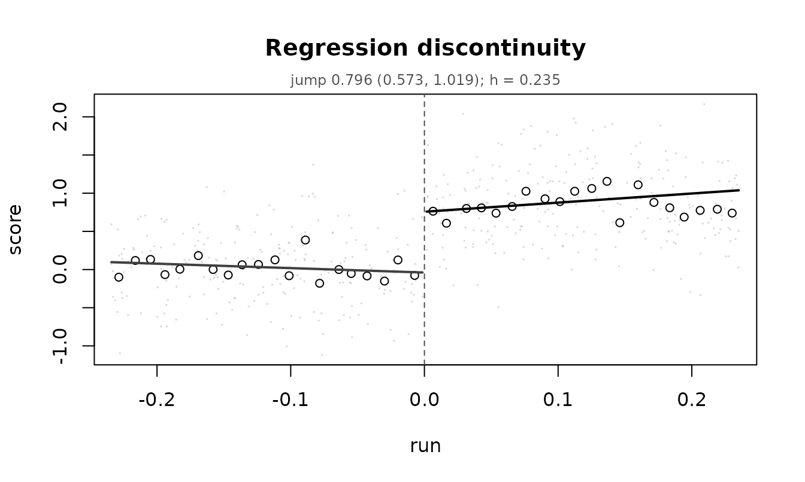

Causal models: DAGs, difference in differences, regression discontinuity
Source:vignettes/causal-models.Rmd
causal-models.RmdA regression coefficient is an association. Turning one into a causal claim takes an argument that lives outside the data, and this vignette covers the three illume supports: a causal graph you supply, a difference in differences, and a regression discontinuity.
What they share is that each names an assumption, and each lets that assumption be checked at least partly. The functions here put the check in the same object as the estimate, so it is hard to report one without the other.
The one rule
The design fixes which regression is fitted, and nothing searches over it.
That matters more than it might sound. If you try specifications until the diagnostics look good and then report the winner’s p-values, those p-values are no longer what they claim: you have used the data twice, once to choose and once to test. illume’s coverage is nominal across 23 designs precisely because nothing does that.
So ilm_dag_model() takes the mean structure from the
graph and leaves it alone. What it will adjust, when a
diagnostic asks, is the error structure – a model for
the dispersion, a random effect for grouping. Those change what the
standard errors are, not which effect is being estimated. Every step is
recorded and printed as it happens.
Part 1: a causal graph
Writing one down
ilm_dag() reads the dagitty text form, an
edge list, or a dagitty object.
g <- ilm_dag("dag {
treatment [exposure]
recovery [outcome]
severity -> treatment
severity -> recovery
treatment -> recovery
age -> severity
age -> recovery
}")
g
#> <ilm_dag> 4 variables, 5 edges
#> exposure: treatment
#> outcome: recovery
#> edges:
#> severity -> treatment
#> severity -> recovery
#> treatment -> recovery
#> age -> severity
#> age -> recoveryThe graph algorithms are written in illume rather than taken from
dagitty, which imports V8 – a JavaScript engine is a heavy
thing to require of someone who wants to fit a regression.
dagitty is in Suggests and the test suite pins
these functions to it: across 400 random graphs, 1564 d-separation tests
with no disagreements, 391 of 391 identical adjustment sets, and 2532
implied claims all confirmed.
What has to be adjusted for
ilm_adjust_sets(g)
#> [[1]]
#> [1] "severity"
#>
#> attr(,"exposure")
#> [1] "treatment"
#> attr(,"outcome")
#> [1] "recovery"
#> attr(,"pool")
#> [1] "severity" "age"
#> attr(,"unobserved")
#> character(0)severity closes the back door. age does not
need to be in the set as well, because conditioning on
severity already blocks the path through it.
The interesting case is when nothing works:
ilm_adjust_sets(g, observed = c("treatment", "recovery", "age"))
#> list()
#> attr(,"exposure")
#> [1] "treatment"
#> attr(,"outcome")
#> [1] "recovery"
#> attr(,"pool")
#> [1] "age"
#> attr(,"unobserved")
#> [1] "severity"An empty result is a finding. It says that with these variables measured, no regression estimates this effect. That is the most useful thing a graph can tell you, and it can only be said before the modelling rather than after.
What the graph claims about the data
Every missing arrow is a testable claim.
ilm_dag_implied() lists them and
ilm_dag_test() checks them:
ilm_dag_implied(g)
#> x y given
#> 1 treatment age severityThe conditioning set is minimal – no member can be dropped. Conditioning on both variables’ parents always works and is the usual textbook basis, but it is often much larger than it needs to be, and every unnecessary covariate costs power and invites a modelling error of its own.
n <- 800
age <- rnorm(n)
severity <- 0.7 * age + rnorm(n)
treatment <- rbinom(n, 1, plogis(0.8 * severity))
recovery <- 1.2 * treatment - 0.9 * severity + 0.5 * age + rnorm(n)
d <- data.frame(age, severity, treatment, recovery)
ilm_dag_test(g, d)
#> testing 1 conditional independency implied by the graph
#> the data are consistent with the graph on every claim tested
#> x y given n estimate p_value p_adj verdict note
#> 1 treatment age severity 800 -0.007021139 0.7460935 0.7460935 OKA failed claim does not say which side is at fault. The graph may be
missing an arrow, or a variable may not measure what its name supposes.
Both are worth knowing before any estimate is taken seriously. Note the
two thresholds: a claim counts as contradicted only if it is both
significant after adjustment and larger than
min_effect. With a few thousand rows a correlation of 0.03
is significant and means nothing.
The whole workflow
fit <- ilm_dag_model(g, d)
#> == DAG-guided analysis ==
#> [1/6] graph and data
#> 4 variables in the graph; 4 of the 4 observed ones found in the data
#> [2/6] does the data agree with the graph?
#> testing 1 conditional independency implied by the graph
#> the data are consistent with the graph on every claim tested
#> [3/6] identification
#> effect of `treatment` on `recovery`
#> 1 minimal adjustment set:
#> {severity}
#> [4/6] response and error structure
#> `recovery` looks continuous -> family "gaussian"
#> no grouping structure found outside the graph
#> [5/6] fitting 1 model (the mean structure is fixed by the graph)
#> set 1 of 1: recovery ~ treatment + severity
#> spread check: INCONCLUSIVE
#> [6/6] results
fit
#> <ilm_dag_model> treatment -> recovery
#> family: gaussian
#> graph vs data: OK (1 claim tested)
#>
#> effect of treatment by adjustment set:
#> [1] severity treatment 1.2461 ( 1.0876, 1.4046) p = <1e-04Compare that with ignoring the graph entirely:
coef(ilm_model(recovery ~ treatment, data = d, family = "gaussian",
verbose = FALSE))["treatment"]
#> treatment
#> 0.6299444The truth is 1.2. Adjusting for what the graph says to adjust for recovers it; not adjusting does not.
Several adjustment sets are a sensitivity analysis
When more than one minimal set is admissible, all of them are fitted. They target the same quantity, so if the graph is right they should agree.
g2 <- ilm_dag("dag {
x [exposure] ; y [outcome]
u -> a -> x ; u -> b -> y ; x -> y
}")
ilm_adjust_sets(g2)
#> [[1]]
#> [1] "u"
#>
#> [[2]]
#> [1] "a"
#>
#> [[3]]
#> [1] "b"
#>
#> attr(,"exposure")
#> [1] "x"
#> attr(,"outcome")
#> [1] "y"
#> attr(,"pool")
#> [1] "u" "a" "b"
#> attr(,"unobserved")
#> character(0)The back-door path can be blocked at a, at
u, or at b. Agreement across the three
supports the graph; a set that disagrees markedly is worth more
attention than any single point estimate.
Reading it back in words
ilm_interpret(fit, ame = FALSE)
#> INTERPRETATION (DAG-identified effect)
#> ======================================
#>
#> The model
#> The effect of treatment on recovery, identified by adjusting for severity
#> -- a minimal sufficient set under the supplied causal graph. A gaussian
#> model of recovery, fitted to 800 observations.
#>
#> What it says
#> treatment: very strong evidence that a higher treatment leads to a higher
#> value of recovery (estimate 1.246, 95% interval 1.088 to 1.405, p =
#> <1e-04).
#>
#> severity: very strong evidence that a higher severity leads to a lower
#> value of recovery (estimate -0.653, 95% interval -0.721 to -0.586, p =
#> <1e-04).
#>
#> What the checks found
#> The graph itself was tested against the data on 1 implied conditional
#> independence(s): OK. The data are consistent with the graph, which
#> supports but does not prove it.
#>
#> All 5 fitting checks passed: the optimiser converged, the gradient is at
#> zero and the information matrix is usable. These say the fit is sound,
#> not that the model is right -- for that, run ilm_appraise().
#>
#> How far to trust it
#> This model has no random or smooth terms, so its t and F tests are exact
#> rather than large-sample approximations.
#>
#> Causal language here rests entirely on the graph being right. It is an
#> assumption you supplied, not something the data established.Note that this says “leads to” rather than “is associated with”, and
says why. Without a design that identifies an effect,
ilm_interpret() will not use causal language at all – and
it tells you that the licence rests on the graph being right, which is
an assumption you supplied rather than something the data
established.
Part 2: difference in differences
Some units get treated at a point in time, others do not, and the comparison is between the two groups’ changes rather than their levels.
panel <- expand.grid(unit = 1:40, time = 1:8)
panel$treated <- as.integer(panel$unit <= 20)
panel$post <- as.integer(panel$time >= 5)
panel$y <- 1 + 0.3 * panel$time + rnorm(40)[panel$unit] +
0.8 * panel$treated * panel$post + rnorm(nrow(panel))
did <- ilm_did(panel, "y", "unit", "time", treated = "treated", post = "post")
#> == difference in differences ==
#> [1/5] design
#> 40 units over 8 periods: 20 treated, 20 control
#> treatment starts at time = 5
#> 4 pre-treatment periods
#> [2/5] response
#> `y` looks continuous -> family "gaussian"
#> [3/5] estimate
#> ATT = 1.0617 (0.6160, 1.5075) p = <1e-04
#> [4/5] parallel trends, before treatment
#> difference in pre-treatment slope: 0.0076 (se 0.1480), p = 0.959 -- OK
#> [5/5] event study
#> 8 periods relative to treatment (reference -1); 0 pre-treatment coefficient(s) exclude zero
did
#> <ilm_did> y ~ treatment | 20 treated, 20 control units
#> family: gaussian random intercept: unit
#>
#> ATT 1.0617 ( 0.6160, 1.5075) p = <1e-04
#>
#> parallel trends before treatment: OK (slope difference 0.0076, p = 0.959)
#> event study: 8 periods, 0 pre-treatment coefficient(s) excluding zero (ilm_plot_did)The estimate is an interaction in a mixed model, so the fit is an
ordinary ilm_model and every method and diagnostic in the
package applies to it.
Parallel trends
The identifying assumption is that without the treatment the two groups would have moved together. That cannot be checked where it matters – it concerns a world that did not happen – but it can be checked before the treatment, and the event study shows the shape of any departure:
ilm_plot_did(did)
Pre-treatment coefficients should sit near zero. Here is what a violation looks like:
bad <- panel
bad$y <- bad$y + 0.35 * bad$treated * bad$time # already diverging
did_bad <- ilm_did(bad, "y", "unit", "time", treated = "treated",
post = "post", verbose = FALSE)
did_bad$parallel$status
#> [1] "FAIL"
ilm_plot_did(did_bad)
Getting that check calibrated took choosing the right reference
distribution. The comparison is between two groups of units’
slopes, so units are the independent replicates and the large-sample
normal is too generous when there are few: it rejected 6.0%, 6.8% and
5.0% of the time at 40, 20 and 80 units, where t on
units - 2 gave 4.8%, 5.5% and 4.5%. A check that cries wolf
is worse than no check, because the remedy for a failed parallel-trends
test is to abandon the design.
Staggered adoption is refused
When units are treated at different times, a pooled two-way fixed effects estimate is not an average treatment effect if the effect varies: already-treated units end up serving as controls for later-treated ones.
stag <- panel
start <- ifelse(stag$unit <= 10, 4, ifelse(stag$unit <= 20, 6, Inf))
stag$treatment <- as.integer(stag$time >= start)
ilm_did(stag, "y", "unit", "time", treatment = "treatment", verbose = FALSE)
#> Error:
#> ! adoption is staggered, so a single pooled estimate would be misleading. Pass allow_staggered = TRUE to get it anyway with the caveat attached, restrict the data to one adoption cohort, or use a cohort-based estimator.allow_staggered = TRUE returns the estimate with the
caveat attached. The honest remedy is a cohort-based estimator – the
did and fixest packages implement them – and
illume does not have one.
Serial correlation
Repeated observations of the same unit are correlated, and difference
in differences with naive standard errors over-rejects badly as a
result. A unit random intercept is fitted by default;
ar = TRUE adds AR(1) on top, which is what matters when the
correlation decays rather than being constant.
Part 3: regression discontinuity
Treatment is assigned by whether a running variable crosses a cutoff, so units just either side are comparable and the jump at the cutoff is the effect.
n <- 2000
run <- runif(n, -1, 1)
score <- 0.5 * run + 0.8 * (run >= 0) + rnorm(n, 0, 0.5)
rd <- ilm_rdd(data.frame(run = run, score = score), "score", "run", cutoff = 0)
#> == regression discontinuity ==
#> [1/6] design
#> 2000 rows: 994 below the cutoff, 1006 at or above
#> [2/6] response and bandwidth
#> `score` looks continuous -> family "gaussian"
#> bandwidth 0.2352 (rule of thumb -- a starting point, not an optimum;
#> see $bandwidth, and rdrobust for a chosen one)
#> [3/6] estimate
#> 224 below and 248 above within the bandwidth
#> jump = 0.7963 (0.5732, 1.0194) p = <1e-04
#> [4/6] bandwidth sensitivity
#> estimate ranges 0.7346 to 0.7963 across 0.5x to 2x the bandwidth
#> [5/6] design checks
#> density at the cutoff: 224 below, 248 above, p = 0.527 -- OK
#> covariate balance: no covariates given
#> [6/6] placebo cutoffs
#> 0 of 4 placebo cutoffs show a jump
rd
#> <ilm_rdd> score at run = 0
#> local linear fit, triangular kernel, h = 0.2352 (224 below, 248 above)
#> family: gaussian
#>
#> jump 0.7963 ( 0.5732, 1.0194) p = <1e-04
#> across bandwidths 0.5x-2x: 0.7346 to 0.7963
#>
#> design checks
#> density at the cutoff: OK (224 below, 248 above)
#> placebo cutoffs: 0 of 4 show a jump
#>
#> Interval is the ordinary one for a weighted local fit. For
#> bias-corrected robust intervals see the rdrobust package.
ilm_plot_rdd(rd)
The design checks
A regression discontinuity is only as good as the claim that crossing the cutoff is the only thing that changes there. Four things check that.
Density. If people can move themselves across the cutoff, the ones just above are not comparable to the ones just below.
rd$density$status
#> [1] "OK"The test is whether the density is discontinuous at the cutoff, not whether it is symmetric about it – and the difference is not academic. Comparing raw counts either side against a 50/50 split flagged 76% of a perfectly smooth sloped normal and 100% of a smooth exponential, over 500 unmanipulated data sets. A local linear density fitted on each side and compared at the cutoff held between 4.6% and 6.0% across uniform, normal and exponential running variables, and had more power as well: with 30% of the units just below the cutoff moved above it, the count split caught 81% and the local linear fit 98%.
Covariate balance. Anything measured before treatment should not jump.
covs <- data.frame(run = run, score = score,
prior = rnorm(n), leaky = rnorm(n) + 0.9 * (run >= 0))
rd2 <- ilm_rdd(covs, "score", "run", cutoff = 0,
covariates = c("prior", "leaky"), verbose = FALSE)
rd2$balance
#> covariate estimate se p_value status
#> 1 prior 0.06657325 0.2421857 7.835258e-01 OK
#> 2 leaky 1.04306073 0.2423753 2.048483e-05 FAILleaky jumps, which means something other than treatment
changes at the cutoff and the estimate absorbs it.
Placebo cutoffs and bandwidth sensitivity.
rd$placebo
#> cutoff estimate se p_value status
#> 1 -0.6725431 0.06642467 0.1103394 0.5474521 OK
#> 2 -0.3533191 0.12316501 0.1115728 0.2702182 OK
#> 3 0.3313668 0.06319596 0.1304218 0.6282401 OK
#> 4 0.6841902 -0.11875060 0.1093612 0.2780819 OK
rd$bandwidth
#> multiplier h n estimate se lower upper
#> 1 0.50 0.1176202 241 0.7346339 0.15817710 0.4230212 1.0462465
#> 2 0.75 0.1764303 345 0.7362564 0.13215994 0.4763051 0.9962078
#> 3 1.00 0.2352404 472 0.7962914 0.11351337 0.5732325 1.0193504
#> 4 1.50 0.3528605 686 0.7840213 0.09231232 0.6027708 0.9652717
#> 5 2.00 0.4704807 909 0.7404174 0.08013887 0.5831377 0.8976970
#> p_value
#> 1 5.656037e-06
#> 2 5.148098e-08
#> 3 8.101311e-12
#> 4 1.257128e-16
#> 5 1.727623e-19An effect that appears only in a narrow window is not an effect.
What this does not do
The interval is the ordinary one for a weighted local fit. It does
not carry the bias correction that a wide bandwidth
calls for; rdrobust implements the
Calonico–Cattaneo–Titiunik intervals and does it well. The default here
is local linear for a reason: a high-order global
polynomial produces estimates driven by points far from the cutoff and
is a documented way to manufacture a discontinuity.
Fuzzy assignment – where crossing the cutoff changes the probability of treatment without determining it – is detected and not reported as sharp, since the jump is then the effect of being eligible rather than of being treated.
Choosing among the three
| identifying assumption | checkable? | |
|---|---|---|
ilm_dag_model() |
the graph is right, and the adjustment set is measured | partly: the implied independencies |
ilm_did() |
parallel trends | partly: the pre-treatment periods |
ilm_rdd() |
nothing else changes at the cutoff | partly: density, balance, placebos |
None of them is checkable where it matters, which is the part that concerns a counterfactual. Everything above makes an assumption more or less plausible; none of it makes one true.
See also
vignette("regression-models") for the modelling engine
and its diagnostics, vignette("exploring-data") for the
exploration side, and vignette("effect-size-and-power") for
ilm_scenario(), which turns a fitted causal model into the
projection a decision needs. Mediation – how much of an effect runs
THROUGH something else – is ilm_mediate(), documented in
vignette("regression-models").